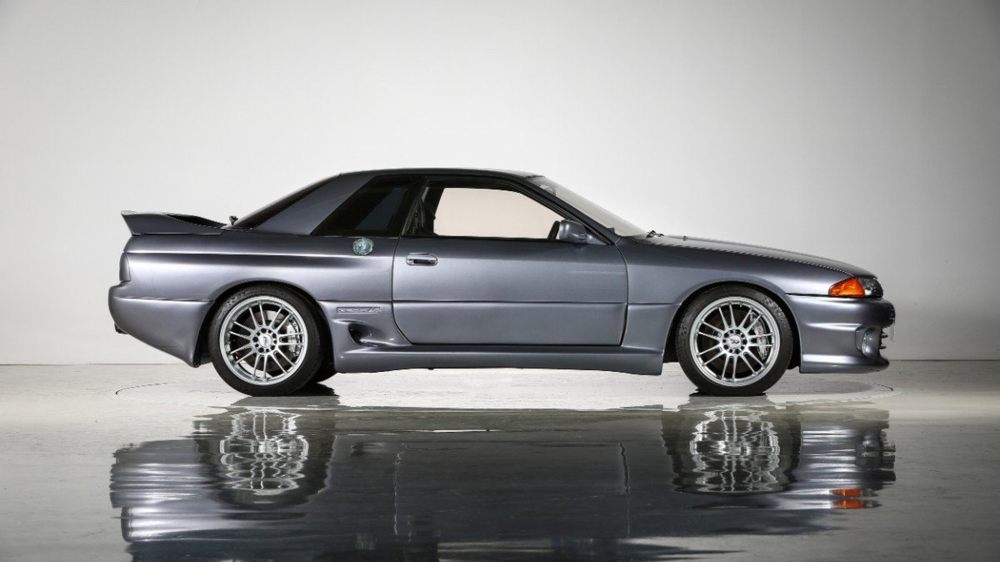
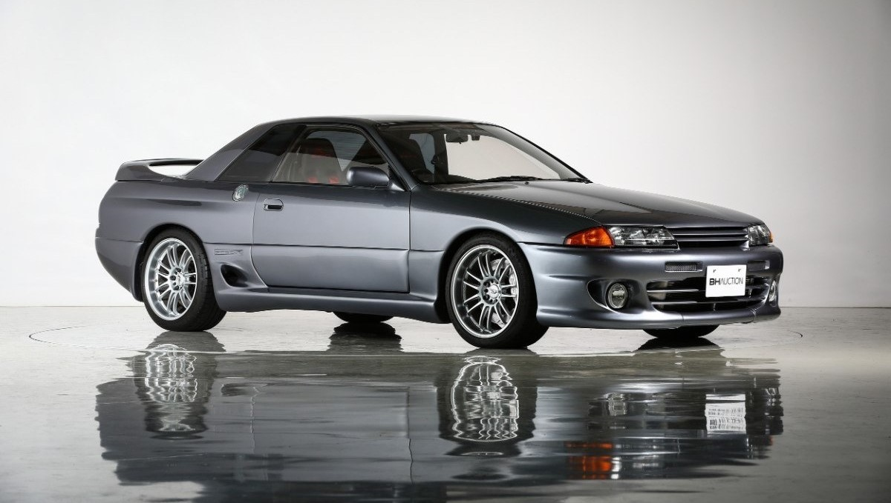
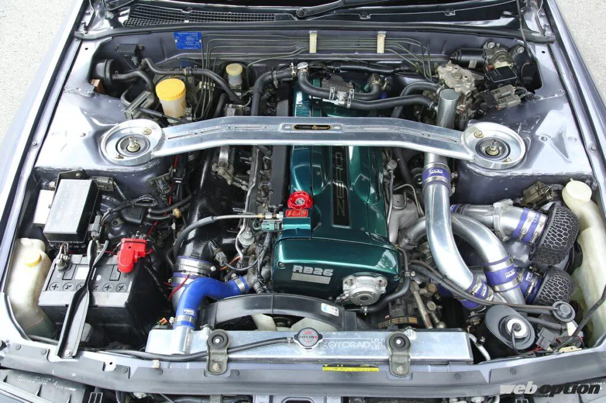
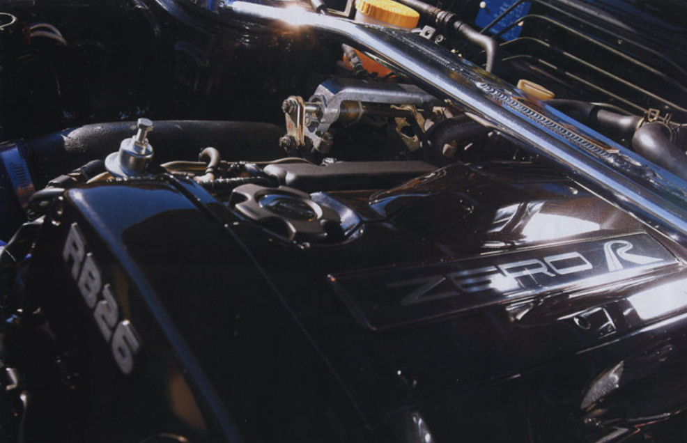
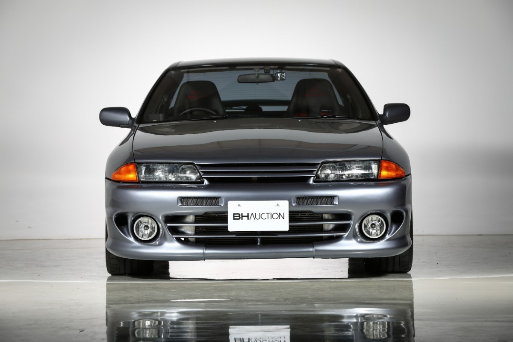
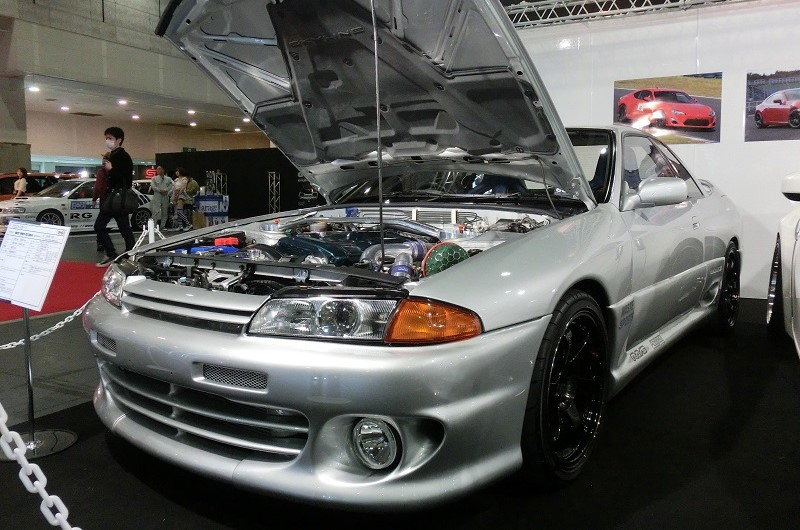

-
HKS Zero-R a umowa gentelmenów
W latach 90's w Japonii obowiązywała tak zwana "umowa gentelmenów", która obowiązywała każdego producenta samochodów dopuszczonych na drogi cywilne. Założeniem tej umowy była moc maksymalna samochodów na poziomie 280 koni mechanicznych. Jak więc HKS w pełni legalnie wyprodukowal model Zero-r z moca na poziomie początkowych 423KM? Umowa jasno mówiła o producentach samochodów ale nie o tunerach. Tak wiec HKS jak i każdy inny tuner funkcjonujacy na terenie Japonii mial wolną rękę jeśli chodziło o moc i modyfikacje wprowadzane do ich autorskich modeli.
-
Celem było stworzenie bardzo mocnego i szybkiego sportowego samochodu, jednocześnie bezpiecznego, który bez problemu pozwalałby na jazdę z prędkościami rzędu 270 km/h. HKS Zero-R testowany był między innymi w Niemczech, na torze Nurburgring, po to, aby jego rozwój obejmował również prześcignięcie konkurencji wśród najlepszych europejskich, sportowych samochodów.
  -
Historia:
Wszystko zaczęło się już w 1989 roku, w ciągu dwóch kolejnych lat dopracowano aerodynamikę oraz mechanikę. Oczywiście najwięcej czasu przeznaczono na tą drugą stronę, a konkretniej mówiąc - silnik. Zastosowano między innymi dużo bardziej wydajny i zaawansowany układ wtrysku paliwa, delikatnie powiększono pojemność silnika do 2688 cm3 itd. Ogólnie, parametry samochodu zaprezentowanego w 1991 roku na Tokyo Auto Salon, wynosiły 423 KM i 389 Nm.
  -
Ale to nie koniec rozwoju HKS Zero-R. W kolejnych latach, samochód był sukcesywnie ulepszany. Dane z 1994 roku, pokazują już 450 KM @ 7500 rpm i 490 Nm @ 6000 rpm, przy zastosowaniu pojedynczej turbosprężarki HKS TA45S. Do tego 6-biegowa skrzynia biegów Holinger HKS.
-
Niespodziewanie w 2005 roku, HKS zaprezentowało kolejną odsłonę swojego samochodu, czyli HKS TF ZERO-R 2005. Jak można się spodziewać, model prezentował jeszcze wyższy poziom. Tradycyjnie, części z najwyższej technologicznej półki oraz lekko dopracowana aerodynamika. Silnik ma pojemność 2.8L (2771 cm3), blok NISMO GT, dwie turbosprężarki HKS GT2530, parametry 600 KM @ 7400 rpm oraz 647 Nm @ 4400 rpm i jak można się spodziewać zapewnia rewelacyjną elastyczność. Tym razem zastosowano 6-biegową skrzynię biegów Getrag. Samochód posiada również nowe zawieszenie oraz układ hamulcowy. HKS Zero-R to dwumiejscowa maszyna, kanapa z tyłu została wywalona na rzecz zbiornika paliwa, który został przeniesiony w tamto miejsce na rzecz powiększonego układu wydechowego.
-
Następny rok przyniósł HKS Zero-R 2006, ale był to po prostu model z poprzedniego roku. Samochód kompletowany był na zamówienie, właściwie było to coś w stylu pół-na-pół, gdyż przyszły właściciel miał pole do popisu, w wyborze pewnych części. Ostatnia wersja nadeszła w 2008 roku, HKS Zero-R Concept 2008, znany jako Zero-R Edition-3. Prawdopodobnie bazuje na GT-R V-spec II R32.
 
Jakby nie było, HKS Zero-R to ekstremalny Skyline R32, jeśli chodzi o przebudowę. Zapewne istnieje wiele "podwórkowych" Skyline o większych mocach, ale jeśli chodzi o całość przedsięwzięcia, jest to wybitnie dopracowana i unikalna maszyna. Niestety, ciężko mi opisać wszystkie użyte bądź wymienione części mechaniczne, gdyż źródła na temat tego samochodu, to głównie japońskie strony, trzy pierwsze poniżej, to oficjalne strony, więc jeśli ktoś ma ochotę na walkę w translatorze, polecam zacząć od nich.